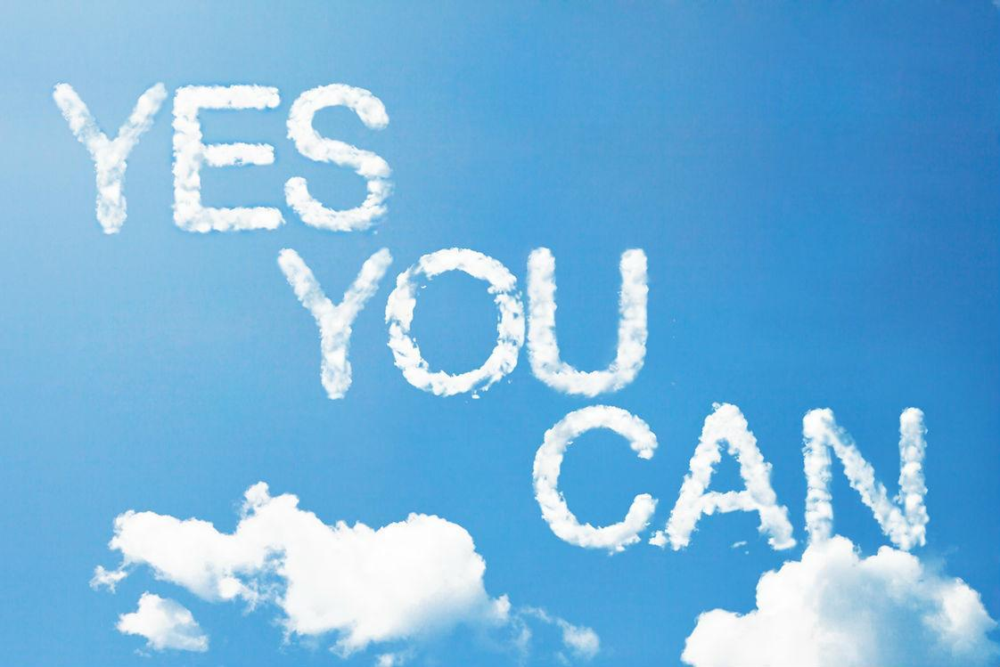

При наведении мыши будет работать фильтр hue-rotate.
Чем левее мышь, тем слабее эффект. Чем правее, тем сильнее.
При нажатой клавише Ctrl - фильтр blur.
При нажатой клавише Alt - фильтр grayscale.
При нажатой клавише Shift - фильтр sepia.
Чем левее мышь, тем слабее эффект. Чем правее, тем сильнее.
При нажатой клавише Ctrl - фильтр blur.
При нажатой клавише Alt - фильтр grayscale.
При нажатой клавише Shift - фильтр sepia.

Фильтр: hue-rotate(0deg)